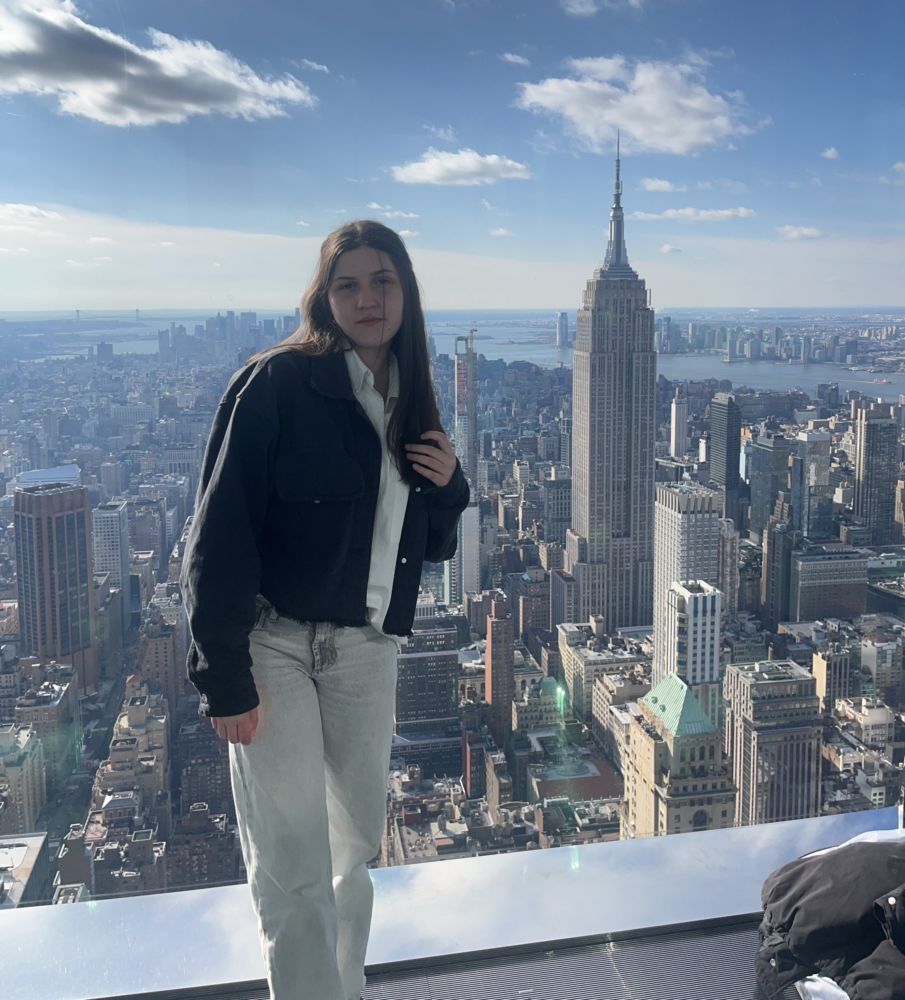

Site Pessoal
Clique aqui para saber mais!
- O meu nome é Diana Silva
- Tenho 18 anos e sou do Porto 🇵🇹
- Português/Inglês
- Frequentei e concluí o curso de Humanidades na Escola Secundária da Maia.
- Atualmente, estudo Comunicação Audiovisual e Multimédia na Universidade Lusófona.
- Tenho como objetivo trabalhar na área de Edição de vídeo/áudio e fotografia.
Gosto:
- Editar
- Viajar
- Ouvir música
- Tirar fotos
- Estar com os meus amigos